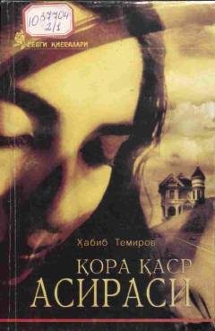

QQMuhabbat va jinoyat fojiasiga bag'ishlangan qiziqarli detektiv roman.
Mazkur asar muhabbat va rashk fojiasi, taqdir taqozosi bilan jinoyat ko'chasiga kirib qolgan bosh qahramon taqdiri haqida hikoya qiladi. Voqealar rivoji kitobxonni o'zining sirli va detektiv mazmuni bilan ohista yetaklaydi.